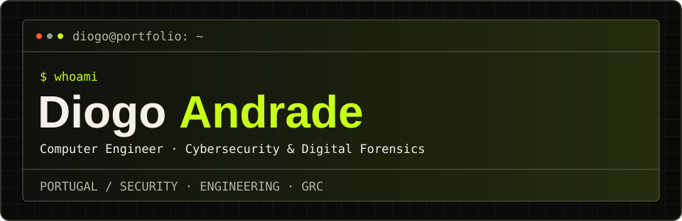

Portfolio ↗ · LinkedIn ↗ · Email ↗
$ whoami
I’m a Computer Engineer based in Portugal with an MSc in Cybersecurity and Digital Forensics. I assess systems, investigate threats and turn security findings into practical improvements.
As a cybersecurity researcher, I carried out security diagnostics and maturity assessments across 80+ organisations. I also worked as an Invited Teaching Assistant in systems administration, operating systems, databases and computer technology.
$ cat stack.txt
| Area | Tools and practices |
|---|---|
| Security & detection | Wazuh YARA SIEM Digital forensics |
| Governance & risk | Security assessments Maturity assessments Risk analysis |
| Languages | Java Python Bash SQL |
| Application development | Spring Boot Vue.js Node.js |
| Systems & infrastructure | Linux Docker Kubernetes Proxmox OPNsense Git |
$ ls projects/
| Project | Focus |
|---|---|
| Risk Matrix | A web application for assessing and visualising organisational risk. |
| Blue Team Operations Lab | A lab for security monitoring, with Active Directory, network segmentation and SIEM telemetry. |
| HomeLab | A documented virtualised environment for experimenting with network and infrastructure design. |
$ cat highlights.txt
| 80+ | 211K+ |
|---|---|
| Organisations assessed | SIEM events analysed |